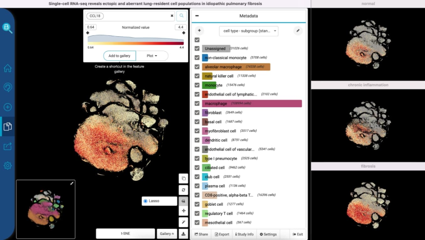
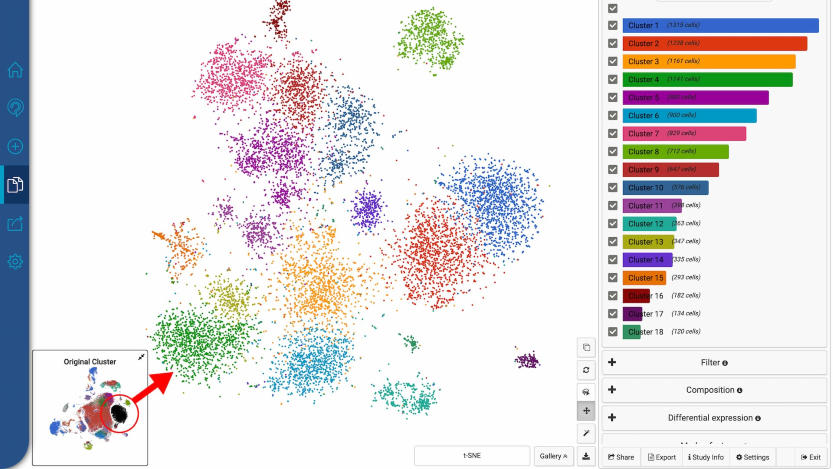
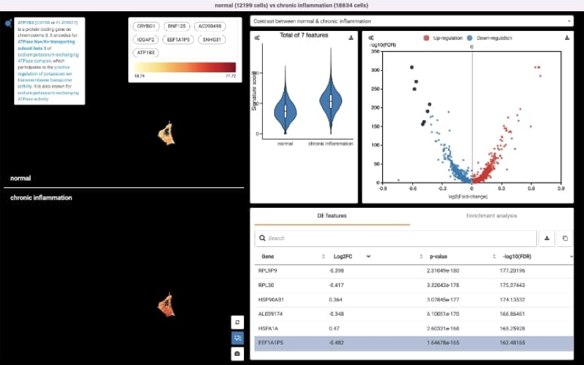
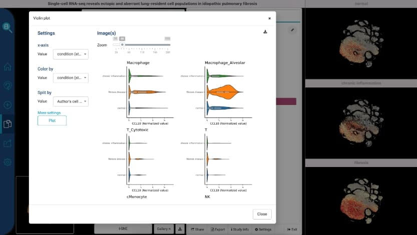

BioTuring BBrowser is an advanced analytics platform engineered to accelerate single-cell omics research. By combining large-scale biological datasets with high-performance computation and rich interactive visualization modules, the system enables scientists to efficiently query and unlock critical diagnostic patterns across complex cellular datasets.
Designed and built a modern intuitive workspace interface for downstream cellular evaluation. Implemented underlying statistical testing routines (including t-Tests, Wilcoxon rank-sum, and ANOVA frameworks) within the backend R services, significantly optimizing processing paths to reduce end-to-end execution times.
Engineered multi-million cell rendering architectures by successfully migrating standard matrix modules to high-density ComplexHeatMap engines. Created bespoke multi-gene violin plotting structures and upgraded underlying spatial scatter plotting capabilities to cleanly render rich metadata layers and gene-expression color maps.
Architected automation management interfaces utilized by internal data engineering teams to safely catalog, schedule, and distribute new dataset additions. Integrated control endpoints to register asset metadata within MongoDB instances while uploading target structural binary files smoothly into remote Amazon S3 cloud storage buckets.
Developed flexible faceted database filtering structures, enabling immediate text and taxonomy matching across curated cell types, target technologies, and study keywords. Added visual summary profiles (sunburst paths and detailed bar metrics) to instantly present data structures before prompting storage downloads.
Created a dedicated tree navigation framework for biological cell classification. The reactive interface maps cellular ontology strings into direct visual hierarchies, making parental and downstream descendant cell lineages instantly scannable for laboratory researchers.